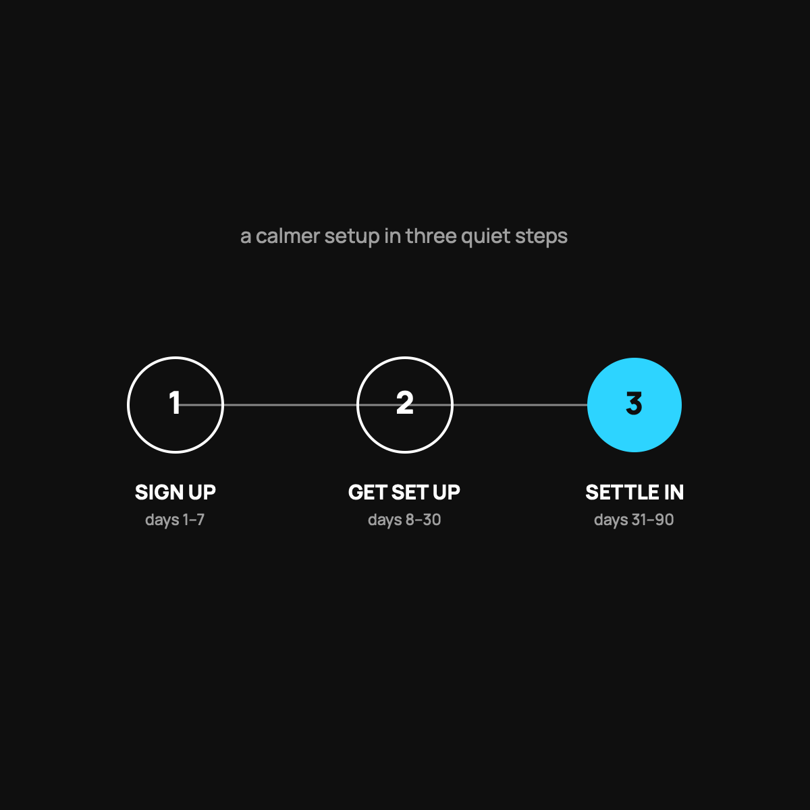

Switching to Health Sharing: What the First 90 Days Look Like
A calm, honest walk-through of the switch, from sign-up to the quiet monthly rhythm.
The first 90 days of health sharing: set aside your $500, read the eligibility rules, sign up and overlap your old coverage by a few days, meet your care advocate and learn how to submit a bill, then settle into a quiet monthly rhythm. By day 90 most people have stopped thinking about it.

Deciding to try health sharing is one thing. Actually switching feels like another, because change involving your family's health is scary. The good news is the first three months are simpler than you would guess. Here is the honest walk-through, so you know what you are signing up for before you do it.
Before you switch: two quick checks
First, make sure you have your $500 set aside for a health event. That is your part when something happens, so it should be sitting in savings, not on a credit card. If you do not have it yet, building that cushion is job one, and I wrote about the first $1,000 emergency fund.
Second, read the guidelines on what is eligible. Health sharing is not insurance, and it has real exclusions and pre-existing rules. Five minutes of reading now prevents every unpleasant surprise later.
Days 1 to 7: signing up
Sign-up is mostly answering honest questions about your health and picking your household. You will see your monthly number, the flat $60 per person advocacy fee plus the community contribution. New members typically get a discount on their first few months, which softens the switch while you get your footing.
One practical note: do not cancel your old coverage until your health sharing membership is active and you understand any waiting periods. Overlap by a few days on purpose. There is no prize for a scary gap.
Days 8 to 30: getting set up
This is where you meet the part that traditional insurance does not really offer: a care advocate, a real person you can text, call, or email. You will set up the app, learn how to submit a bill, and get pointed to cash-pay doctors and clinics. Spend twenty minutes here. Knowing how to submit a bill before you need to is like knowing where the fire extinguisher is before there is a fire.
Days 31 to 90: living with it
Now it is mostly quiet, which is the point. Each month you pay your fee and approve your share of the community's bills. If you have a routine need, you use cash prices, which are often far lower than "insured" prices, something I explained in the cash price secret. If something bigger comes up, you pay your $500, the team negotiates the bill, and the crowd funds the rest.
By day 90 most people have stopped thinking about it, which is exactly what you want from a healthcare setup.
The honest catch
Switching is not right for everyone. If you have an ongoing, expensive condition that needs guaranteed coverage, or you cannot keep $500 on hand, this is probably not your move. I keep the honest who-should-skip-it post up so nobody switches into the wrong thing.
The takeaway
The first 90 days of health sharing are: set aside your $500, read the rules, sign up (overlap your old coverage briefly), meet your care advocate and learn the app, then settle into a quiet monthly rhythm. It is a smaller change than the fear makes it feel.
Questions I get about this
Should I cancel my insurance before joining health sharing?
No. Don't cancel your old coverage until your membership is active and you understand any waiting periods. Overlap by a few days on purpose. There's no prize for a scary gap.
What do I need before I switch?
Two things. $500 sitting in savings for a health event, not on a credit card. And five minutes reading the guidelines on what's eligible, because health sharing is not insurance and has real exclusions and pre-existing rules.
What is a care advocate?
A real person you can text, call, or email who helps you find fair-priced care and negotiates your bills. Spend twenty minutes in the first month learning how to submit a bill before you need to. I wrote up what a care advocate actually does.
If you are ready to see your number and the $99-a-month new-member deal (your first 3 months), use my code NORMAL: start at CrowdHealth (opens in a new tab).
My family of four uses CrowdHealth and I really believe in the model. If you join through my discount link (opens in a new tab) (code NORMAL), you get your first 3 months at $99 a month, and Normaltown USA earns a referral bonus if you stick around. It costs you nothing extra, and I only refer you to things I would tell a friend about. Health sharing is not insurance, and nothing here is medical, tax, or financial advice.

Written by David Dewese
Normal guy with a full-time job, wife, and kids. Spent twenty years pursuing music and creative ventures before starting a family. Sharing tips and tricks on how to thrive while living on an artist's income. Not a financial advisor. More about me.
New here?
Normaltown USA is plain-English money and healthcare help for normal people, written by a regular guy with a family of four. No jargon, no hype. Start here, or read the FAQ.